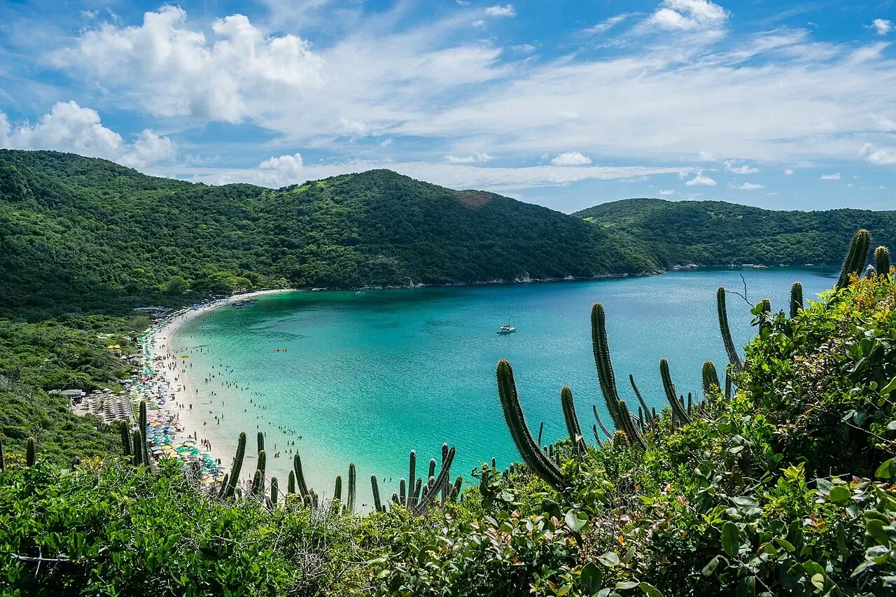

Arraial do Cabo
Rio de Janeiro, Brésil · plongée, snorkeling

Des baies découpent le littoral d’Arraial do Cabo, à l’est de Rio de Janeiro. Le port sert de point de départ aux sorties de plongée et aux excursions vers les plages.
- Lieu
- Rio de Janeiro, Brésil
- Niveau
- Variable selon les conditions
- Activités
- plongée, snorkeling
- Type d'eau
- Mer / océan
- Coordonnées
- -22.97, -42.02 (position approximative du secteur)
Ouvrir dans Ocean Buddy Télécharger sur l'App Store
Source : Wikipédia · géographie du lieu.